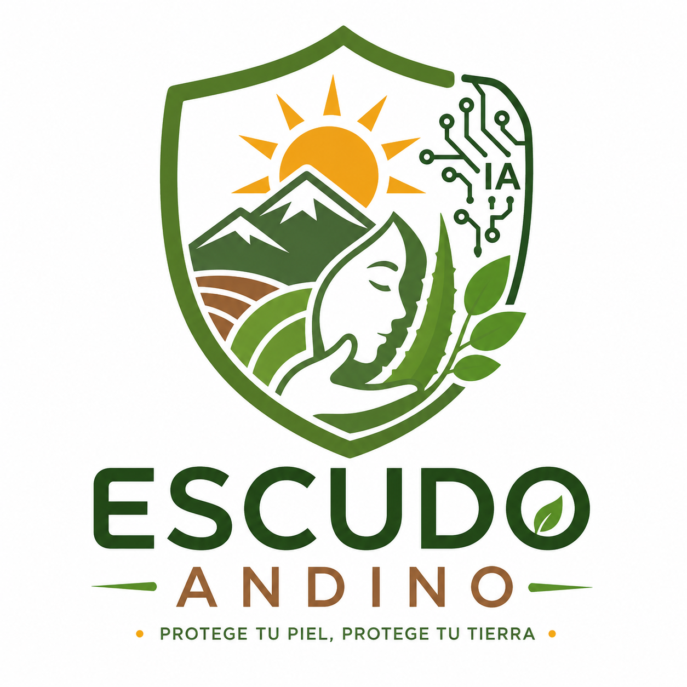

Protección solar con raíces andinas
Formulado con óxido de zinc, sábila y moringa. Impulsado por inteligencia artificial durante su formulación para acompañarte en cada aplicación.
Plan Free
Tu rutina diaria
Recomendación
Seguimiento
Calculadora
Consejos UV
Cuenta y ayuda
Planes
Preguntas frecuentes
Acerca de
Prototipo experimental
El FPS de Escudo Andino aún no está certificado en laboratorio. Combina siempre su uso con sombra, ropa de manga larga y sombrero.
PRO · Próximamente
Análisis de piel por fotografía
Estamos desarrollando un módulo que analizará el tono de piel a partir de una foto para afinar aún más la recomendación. Estará disponible para usuarios del plan Pro como parte de nuestra hoja de ruta.